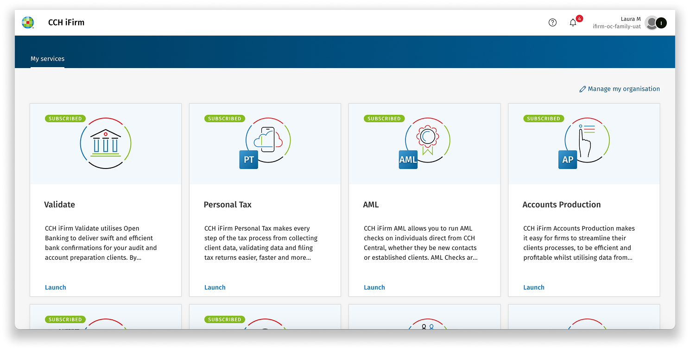

The Wolters
Kluwer Story
Designing complex financial software for a global ecosystem

The environment
Where the complexityactually came from
Wolters Kluwer builds the software that accounting, tax and financial professionals use to do their work. On screen it looks like forms and tables. The complexity sits underneath.
What the software covers
- 01Accounting and client accounting
- 02Tax
- 03Client management and contacts
- 04Time tracking, jobs and billing
- 05Documents
- 06Workflows and reporting
Why it was complex
Several products, built at different times by different teams, some of them acquired and carrying their own conventions. Legacy foundations underneath a migration to the cloud. Regional differences in how the work is actually done, and regulation that changes by country.
Who uses it
Accountants, tax advisers and finance professionals.
Markets
The product ecosystem · how the applications relate to each other
The difficulty was never making the interface look good.
It was making complicated professional work understandable, navigable and reliable, for people who already knew their domain far better than I did.
Scope and role
What I owned
I designed end to end: understanding the workflow, mapping the information architecture, designing the interaction, testing it, and staying with it through build.
Some of the work was new product design. A lot of it was improving software that already existed and already had users, which is a different discipline: you inherit decisions, constraints and habits, and you have to decide which of them are worth changing.
Global product unification
One system,many markets
Global consistency, regional flexibility.
Not every country needs an identical interface. They need a coherent system that can adapt without fragmenting.
The portfolio had grown by region and by acquisition, so the same idea had been solved several times in several ways. A user moving between two parts of the ecosystem met two different mental models of the same thing.
I worked on initiatives to reduce that fragmentation: shared foundations, consistent interaction patterns, and product experiences that could carry regional variation without becoming separate products.
The hard part was judgement, not standardisation. Some differences between markets were accidental and worth removing. Others were real: a legal requirement, a professional convention, a workflow that genuinely works differently in that country. Flattening those would have made the product worse.
Knowing which was which required research and close work with the regional teams.
The same product in two markets · what stays fixed
Regional variation in detail · what is allowed to differ
Cloud migration
From installedsoftware to the cloud
Moving a product to the cloud is not a re-skin. It changes what the product is allowed to know about the person using it.
On-premise software had been a set of applications a firm installed and opened one at a time. In the cloud they became parts of one environment that users expected to behave as a whole.
That reframing touched almost everything I worked on: navigation, information architecture, how a person signs in, how they discover the products they have access to, how applications refer to each other, and what context survives when they move between them.
- 01Navigation and information architecture
- 02Client context across applications
- 03Authentication and single sign-on
- 04Cross-product relationships and journeys
- 05Product discovery and entry points
On-premise to cloud · the information architecture rethought
Client context
Context isa design object
Almost everything an accountant does is done on behalf of a specific client. That client is the spine of the work: the tax return, the billing, the documents, the deadlines all hang off it.
In separate applications, that spine kept breaking. Users selected a client, did some work, moved to another application, and had to establish who they were working on all over again. Or worse, did not, and had to check.
I mapped the existing workflow to see exactly where context was lost and what it cost each time, then explored how a persistent client context could travel with the user across applications.
Treating context as an object the system carries, rather than a selection each screen makes, changes the interaction design of every product that touches it. That is why it was worth the mapping before the designing.
The existing workflow mapped · where client context is lost
Persistent client context · the concept across applications
Product dashboard
An entry point,not a destination
A dashboard in a growing ecosystem has one honest job: get the person to the right place, with the right context, quickly.
The temptation with a dashboard is to make it the product: to fill it with everything, because everything is available. That produces a screen people scan once and then bypass.
I designed it as a way in. It had to make the shape of the ecosystem legible, show what the firm actually had access to, and give the work a starting point without pretending to be the work.
What it had to do
- 01Make the product ecosystem understandable at a glance
- 02Support discovery of products a firm may not know it has
- 03Establish hierarchy between frequent and occasional work
- 04Carry cross-product relationships, not just links
The dashboard · unified entry point into the ecosystem
Authentication
Infrastructureis an experience
I worked on moving towards a unified authentication and single sign-on experience across Europe. On a slide this is a technical project. In use, it is the first thing every person meets, every day, before any of the design work further in gets a chance.
It had to be consistent across products that had signed people in differently for years, hold up against regional considerations, and scale as more products joined. Getting it wrong would have been felt everywhere at once.
This is what I mean by designing at ecosystem level: the decision is made once and lands in every product.
Complex financial workflows
Denseby necessity
Financial data, tax information, client records, forms, tables, documents, billing, tasks, compliance requirements, several roles and several workflows crossing the same screen.
These interfaces are dense because the work is dense. Stripping them back to look calmer would remove information professionals need, and they would go and find it somewhere less convenient.
So the work was not simplification. It was hierarchy, grouping, sequence, naming and interaction: making a lot of information navigable and reliable rather than making it look like less.
What made it hard
- 01Multiple roles reading the same screen for different reasons
- 02Relationships between records that had to stay visible
- 03Compliance requirements that could not be designed away
- 04Tables and forms as the primary interface, not the exception
Tax interface · a dense professional workflow in use
Client record · tables, forms and relationships
Improving what exists
Findingthe real problem
A significant part of my role was improving software that already existed rather than designing from scratch. I analysed products through heuristic evaluation, real product data, user and customer feedback, usability findings, business requirements and technical constraints, then proposed what to change.
Some of the most useful things I did changed very little. A small interaction change, correctly placed, can remove a problem that looked like it needed a redesign. And it ships, which a redesign often does not.
A heuristic finding and the change it produced
Solve the real problem instead of redesigning everything.
Research and validation
Research thatchanged the design
I led and contributed to foundational research to understand what users actually needed, and tested concepts with real users and customers before committing to them.
Research
Understanding current workflows, pain points, expectations and future needs, including where regional practice genuinely differs.
Insight
Which differences were accidental and which were real. Where standardisation would help and where it would break someone's job.
Decision
What to unify, what to leave regional, what to sequence first, and what not to build at all.
Design
Architecture, workflow and interaction that carried the decision, then prototyped and tested again.
Validation mattered most where it contradicted me. Testing a concept with people who do the work daily is the fastest way to find the assumption you did not know you had made, and it is far cheaper to find it in a prototype than in a release.
Where testing confirmed a direction, it did something else useful: it gave the team the evidence to commit properly instead of hedging.
Research synthesis and the decision it drove
Design system
I did not just usethe system
I applied the company design system across products and used it to pull inconsistent experiences back towards a shared language, including acquired products that had arrived with conventions of their own.
And I contributed to it regularly. Working across products meant I kept meeting the same problem in different places, which is exactly the signal that something belongs in the system rather than in a screen.
- 01Identified patterns that repeated across products
- 02Reduced duplication of solved problems
- 03Brought acquired products closer to the system
- 04Contributed components and patterns back
System work also reduces build effort. A pattern designed once, agreed once and implemented once stops three teams solving it three ways.
Design system · patterns applied and contributed
Accessibility
Another lenson quality
I reviewed products for accessibility and usability together, because in dense professional software they find the same faults. Weak hierarchy, low contrast, meaning carried by colour alone and unclear interactive states fail an accessibility audit and also slow down everyone else.
Treating it as a quality lens rather than a compliance checkbox meant the fixes improved the product for all users, not only the ones the standard was written for.
Accessibility review · hierarchy, contrast and interaction clarity
Emerging technology
AI as a tool,not a theme
In the design process
I use AI to move faster through the parts of the work that are volume rather than judgement: exploring more concepts before committing, analysing information, and cutting repetitive production work. It buys time for the thinking, it does not do the thinking.
In the product
I also explored where AI could genuinely improve customer workflows in professional software, which is a narrower set of places than the current enthusiasm suggests.
Also
Code Games
I took part in Code Games, an internal initiative where people from different teams build something together outside their usual work. I joined to contribute beyond my own projects, to learn directly from engineers and data colleagues, and to get to know people across the company I would never have met through the roadmap.
How I work
The working model
Understand the system
Users, business requirements, workflows, constraints and how everything connects come first. In an ecosystem, the interface is the last thing you should decide, because everything else changes what it needs to be.
Find the real problem
Research, data, feedback and heuristics, so the thing I fix is the thing that is broken rather than the thing that is visible.
Make complexity understandable
Translate complicated requirements into information architecture, workflows and interactions people can navigate under pressure.
Design for the system
Look for the reusable pattern rather than solving the same problem again one screen at a time.
Validate early
Prototypes and real user feedback, specifically to challenge my own assumptions while changing course is still cheap.
Work with constraints
User needs, business requirements, technical feasibility and regional differences are all real at once. Design is what balances them.
Keep solutions simple
Prefer the small change that works to the big one that might. A modest improvement people are already using is worth more than an ambitious one still waiting to be built.
Impact
What changed
- 01More coherent experiences across products that had grown apart
- 02Greater consistency across regions, without flattening real local needs
- 03Modernised experiences as products moved to the cloud
- 04Better cross-product navigation and clearer entry points
- 05Reusable patterns contributed back to the design system
- 06Reduced duplication, and less build effort spent re-solving the same problem
- 07Product decisions validated with users before they were built
- 08Improved usability and accessibility in existing software
I design products that make complex systems feel understandable.
I can zoom out far enough to see the ecosystem, and in far enough to solve the interaction. I am grateful for everything I learnt at Wolters Kluwer.